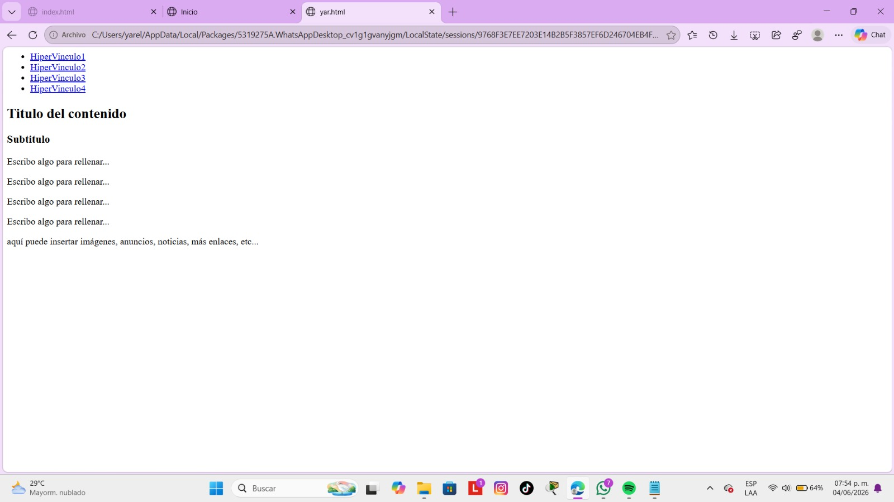

Esta práctica utiliza etiquetas HTML para organizar una página web. Incluye una cabecera (header), menú de navegación (nav), contenido principal (main), barra lateral (aside) y pie de página (footer). También emplea listas, enlaces, párrafos y estilos CSS para crear una página.
Volver al inicio